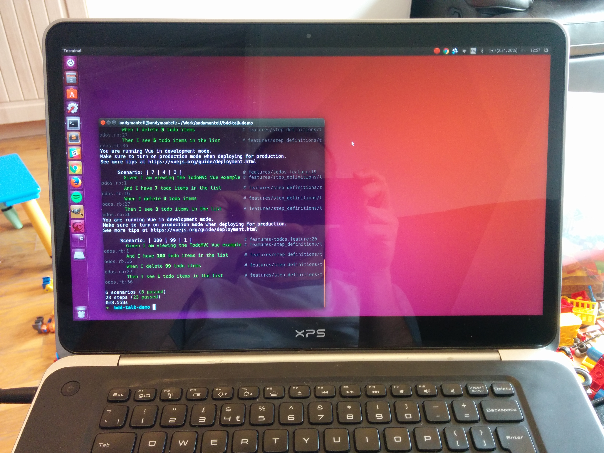

class: center, middle # Behaviour Driven Development ## Brought to you today by Gherkins, Cucumbers and an enormous Guinea pig <br><br> Andy Mantell - Contract frontend developer<br> (@andymantell) --- # What is BDD? Behaviour Driven Development An extension of Test Driven Development Where TDD tends to be extremely technical and the sole preserve of developers, BDD tries to bring together the business requirements (Maybe it's your product owner, or a stakeholder) and the tester/developer. --- # What is BDD? The principle is that the behaviour of the system is defined and agreed up front in a Domain Specific Language. The developer then builds the functionality in the system. The behaviour specification is then turned into an automated test suite. (The order of the above may vary slightly) In order to achieve this, BDD is supported by a set of languages and tools to define the behaviours and to run the tests --- # BDD tooling There are a variety of tools available, but today I'm going to cover: - Gherkin (The language in which the scenarios are defined) - Cucumber (A tool to map these scenarios to test steps) - Capybara (A tool for driving a web browser in a test suite) --- <img src="assets/images/todomvc.png" alt="TodoMVC" style="width:100%"> --- # Setup ## Requirements Ruby, Bundler and PhantomJS installed on your system ## Setting up In a new folder, create a `Gemfile` containing the following: ```ruby source 'https://rubygems.org' gem 'cucumber' gem 'capybara' gem 'capybara-screenshot' gem 'poltergeist' ``` And type `bundle install` to install these dependencies (See http://bundler.io/) --- <video loop style="max-width: 80%" src="assets/images/init.ogv"></video> --- # Configure Capybara Create a new file as follows: `/features/support/config.rb` ```ruby require 'capybara/cucumber' require 'capybara/poltergeist' include Capybara::DSL Capybara.default_driver = :poltergeist Capybara.javascript_driver = :poltergeist ``` --- # Capybara! Now's a good time to `git commit -m "Initial commit"` <img src="assets/images/capybara.jpg" alt="Capybara" style="width: 100%"> --- # Gherkin scenario <img src="assets/images/todos-feature.png" alt="Todos feature" style="width: 100%"> --- # Pending step definitions <video loop style="max-width: 80%" src="assets/images/pending-steps.ogv"></video> --- # Step definitions <img src="assets/images/pending-steps.png" alt="Pending steps" style="width: 100%"> --- # Step definitions <video loop style="max-width: 80%" src="assets/images/empty-steps.ogv"></video> --- <img src="assets/images/filled-out-steps.png" alt="Filled out steps" style="width: 100%"> --- <video loop style="max-width: 80%" src="assets/images/initial-test-run.ogv"></video> Green! --- <video loop style="max-width: 80%" src="assets/images/ambiguous-match.ogv"></video> --- <img src="assets/images/screenshots.png" alt="Screenshots" style="width: 100%"> --- <img src="assets/images/2017-06-03T11:17:45ZEntering a single todo item.png" alt="Error screenshot" style="width: 100%"> --- <img src="assets/images/clear-localstorage.png" alt="Clear localstorage" style="width: 100%"> --- <img src="assets/images/parameterized-steps.png" alt="Parameterized steps" style="width: 100%"> --- --- <video loop style="max-width: 80%" src="assets/images/parameterized-steps.ogv"></video> --- ### Scenario outlines <img src="assets/images/parameterized-steps.png" alt="Parameterized steps" style="width: 100%"> --- ### Scenario outlines --- ### Scenario outlines <video loop style="max-width: 80%" src="assets/images/scenario-outlines.ogv"></video> --- # Capybara commands - `find` - finds an element based on a CSS selector or XPath - `fill_in` - fills in an input field - `click_link` - click a link - `click_button` - click a button - `assert_text` - Assert that some text appear on the screen And many more... http://www.rubydoc.info/github/jnicklas/capybara --- # Running as part of your CI pipeline Developers would run the test suite against their local builds before they push work. <center>  </center> The next step would be to get it running in your CI pipeline, whether that be Jenkins, Travis, or whatever. Each time changes are pushed to your integration environment, the tests would then run and report any failures. <center> <img src="assets/images/jenkins.png" alt="Jenkins" style="width: 125px"> <img src="assets/images/travis.png" alt="Travis" style="width: 150px"> <img src="assets/images/gitlab.svg" alt="Gitlab" style="width: 150px"> </center> --- # Benefits - Fantastic at ensuring your system is developed to meet the original requirements - And _continues to meet those requirements_ - Capybara executes the tests in a "real" browser and interacts with the UI like a real user would <center> </center> --- # Other forms of testing It is _not_ a replacement for other forms of testing. If you've already got unit tests, integration tests, whatever - keep writing and running them! Having said that, if you're not doing any testing at all - it's not a bad place to start. <center> </center> --- ## Links - These slides: https://andymantell.github.io/bdd-talk/ - Example test suite from the slides: https://github.com/andymantell/bdd-talk-example( - https://github.com/teamcapybara/capybara and http://www.rubydoc.info/github/jnicklas/capybara <br><br><br> ## Questions?